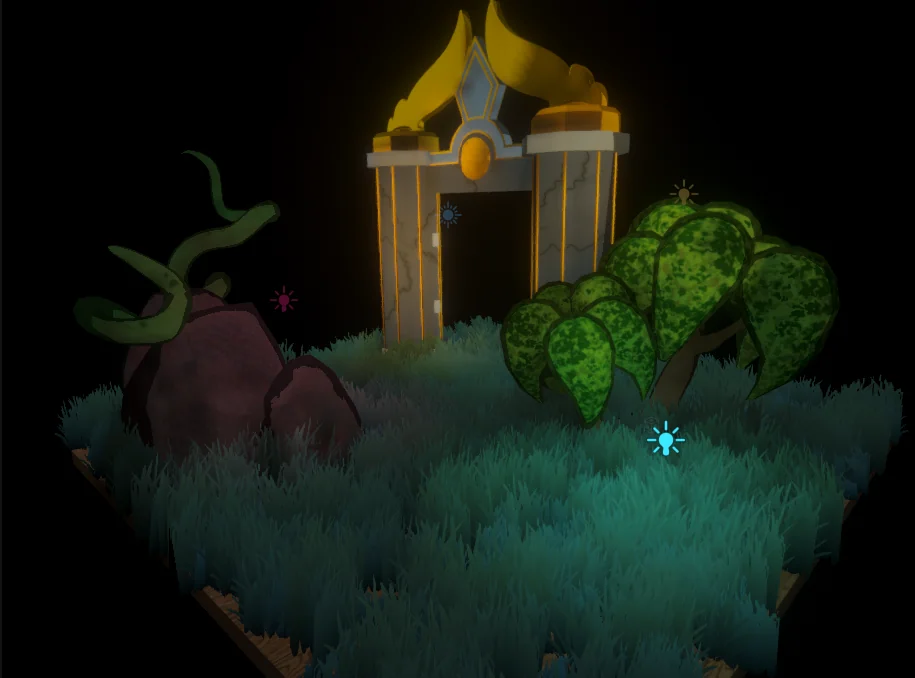
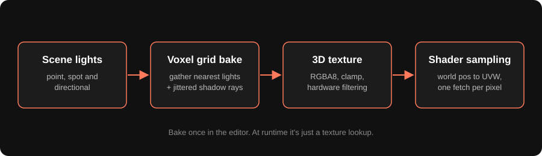
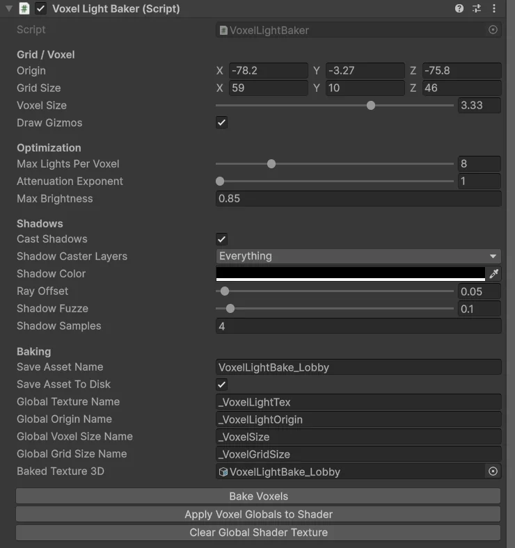
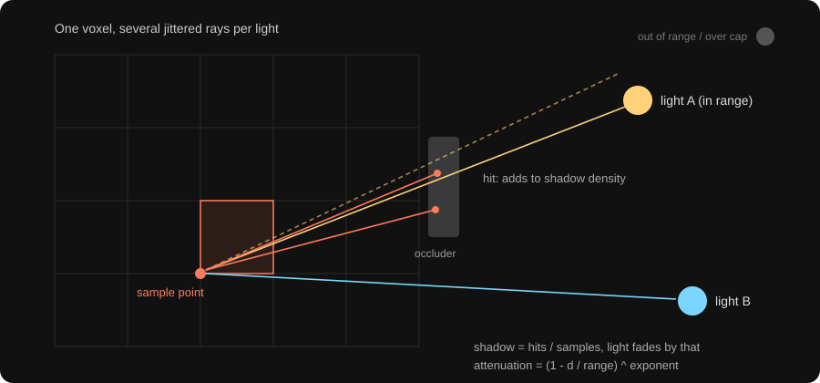
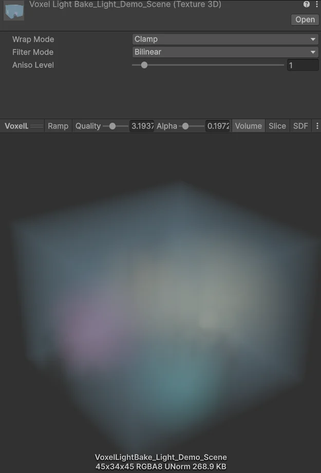
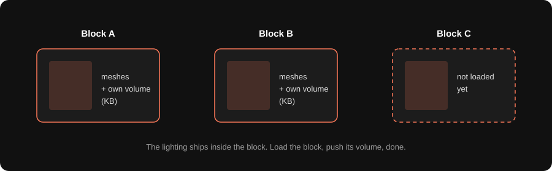

For Calamity, a VR project at Highstreet, the world was built out of scene blocks that load in at runtime, MMO style. You walk, blocks stream in, blocks stream out. That's great for memory, but it breaks Unity's normal lighting workflow pretty badly. So I built a small tool that bakes lighting into a 3D texture, a voxel lightmap, and every shader just reads from it. Each block carries its own lighting, and it's only a few hundred kilobytes.

The problem
Unity lightmaps want a scene that's baked as one thing. Every object needs its own lightmap UVs, the lightmaps end up as big atlas textures, and the whole setup assumes the scene stays together. Our blocks were loaded additively and could come and go, so that didn't fit at all. Real-time lights were the other option, but in VR every light costs you twice, once per eye, and real-time shadows on top of that were just not happening on our budget.
What I wanted was simple. Smooth, decent lighting. Cheap at runtime. Something that ships inside the block and works the moment the block loads.
The voxel idea
Instead of storing light on surfaces, store it in space. Put a 3D grid over the block, work out how much light reaches each grid point, and save that grid as a 3D texture. At runtime, any pixel just asks "how much light is at my position?" and reads it from the texture. The GPU's filtering blends between the neighbouring cells, so it comes out smooth. It doesn't care what the mesh is, what its UVs are, or whether it was even in the scene when you baked.

Setting up the grid
The baker is one component. You give it a grid origin, a grid size in cells and a voxel size in metres. In the setup above, the grid is 59 x 10 x 46 cells at 3.33 m each, which covers roughly 196 x 33 x 153 metres. Then there are a few knobs: how many lights a cell can take, the attenuation exponent, a brightness multiplier, and the shadow settings. Bake, and it writes the texture, saves it as an asset and pushes it to the shaders.

The diffuse scan
I call the main pass the diffuse scan. It's three nested loops over every cell. For each cell it finds the lights that can reach it. Directional lights always count. Point and spot lights only count if the cell is inside their range. Then it sorts them by distance and keeps the nearest ones, up to the max lights per voxel. That cap matters when a scene has a lot of small lights. Far ones barely add anything, and it keeps the bake time sane.
Light[] lights = FindObjectsOfType<Light>();
for (x, y, z in grid)
{
Vector3 p = origin + new Vector3(x, y, z) * voxelSize;
var nearby = lights
.Where(L => L.enabled && (L.type == Directional || Distance(p, L) <= L.range))
.OrderBy(L => Distance(p, L))
.Take(maxLightsPerVoxel);
colors[x + y * sx + z * sx * sy] = GatherLight(p, nearby);
}For each light it keeps, the light's colour times its intensity gets added to the cell. Point and spot lights fade with distance using a simple curve, one minus distance over range, raised to the attenuation exponent. A higher exponent pulls the light in tighter around the source. Directional lights don't fade. There's no surface normal here. The cell just collects light from every direction, which is fine for the soft look I was going for.
Color GatherLight(Vector3 p, lights)
{
Color sum = black;
foreach (var L in lights)
{
float shadow = castShadows ? FuzzScan(p, L) : 0; // 0 = lit, 1 = fully blocked
Color c = L.color * L.intensity;
if (L.type != Directional)
c *= Clamp01(Pow(1 - d / L.range, attenuationExponent));
sum += Lerp(c, black, shadow);
}
return sum;
}The fuzz scan
Shadows come from raycasts. From the cell, it shoots a ray towards the light. If something on the shadow caster layers is in the way, that light is blocked for this cell. A single ray gives you a hard yes or no, and with cells this big that looks blocky and harsh. So I shoot a few rays per light, the shadow samples, and each one gets its direction nudged by a small random offset, the shadow fuzz. That's what I call the fuzz scan. The number of rays that hit something, divided by the number of rays, is the shadow density. Half the rays blocked means the light comes through at half strength. That gives soft, fuzzy shadow edges for free.

float FuzzScan(Vector3 p, Light L)
{
Vector3 dir = L.type == Directional ? -L.forward : Normalize(L.position - p);
float len = L.type == Directional ? 500f : Distance(p, L) - rayOffset;
Vector3 start = p + dir * rayOffset; // step off the surface a bit
int hits = 0;
for (int s = 0; s < shadowSamples; s++)
{
Vector3 jittered = dir + Random.insideUnitSphere * shadowFuzz;
if (Physics.Raycast(start, jittered, len, shadowCasterLayers)) hits++;
}
return hits / (float)shadowSamples;
}The ray offset pushes the start point a little towards the light, so a cell sitting right on a surface doesn't shadow itself. In the setup above I used an offset of 0.05, a fuzz of 0.1 and 4 samples. More samples means smoother shadows and a slower bake, but bakes are in the editor, so I don't mind.
Packing it into a texture
After gathering, each cell gets multiplied by the max brightness and clamped to 0 to 1, because it's going into an 8-bit texture anyway. Then the shadow colour is added on top. So it's not really the colour of shadows, it works more like an ambient floor, so the darkest areas aren't pure black. All the cells go into a 3D texture, RGBA with 8 bits per channel, clamped at the edges and with bilinear filtering on. On a 3D texture that's trilinear blending between the eight nearest cells, done in hardware.
c.rgb = Clamp01(c.rgb * maxBrightness);
c.a = 1;
colors[i] = c + shadowColor; // acts as an ambient floor
var tex = new Texture3D(sx, sy, sz, TextureFormat.RGBA32, mipChain: false);
tex.wrapMode = TextureWrapMode.Clamp;
tex.filterMode = FilterMode.Bilinear; // trilinear between cells on a 3D texture
tex.SetPixels(colors);
tex.Apply();
Shader.SetGlobalTexture("_VoxelLightTex", tex);
Shader.SetGlobalVector ("_VoxelLightOrigin", origin);
Shader.SetGlobalFloat ("_VoxelSize", voxelSize);
Shader.SetGlobalVector ("_VoxelGridSize", gridSize);The texture and its origin, voxel size and grid size are pushed as global shader values, and the component pushes them again when it's enabled. So when a block loads, its lighting goes live with it. Here's what a baked volume looks like. This one is 45 x 34 x 45 cells, and the asset is 268.9 KB.

Reading it in the shader
This is the same lookup I used in the grass shader. Take the pixel's world position, subtract the grid origin, divide by the size of the whole volume, and you've got a 0 to 1 coordinate inside the texture. Sample it once and multiply your albedo by the result. One texture fetch, and it doesn't matter how many lights the bake used.
float3 SampleEnvironmentVoxelMap(float3 worldPos)
{
float3 uvw = (worldPos - _VoxelLightOrigin.xyz) / (_VoxelSize * _VoxelGridSize.xyz);
return SAMPLE_TEXTURE3D(_VoxelLightTex, sampler_linear_clamp, uvw).rgb;
}
// in any material
float3 light = SampleEnvironmentVoxelMap(positionWS);
float3 color = albedo.rgb * light;In the real levels
The real test was the Highstreet levels. In the Arena and the Lobby, all the soft coloured light you see is coming from the voxel bake. The lamps glow and the plants pick up the colour around them. Anything moving through gets lit by the same volume too, because it's sampled by position, not baked onto a surface.
Why this was the smart choice for VR
The cost per pixel is fixed. It's one 3D texture read, whether the block had two lights or twenty. There's no per-light cost at runtime, no real-time shadows and no shadow maps to render, which in VR means you're not paying for any of it twice.
The data is tiny. The texture is RGBA8, so 4 bytes per cell. The 59 x 10 x 46 grid from the inspector is 27,140 cells, times 4 bytes is 108,560 bytes, about 106 KB raw. The 45 x 34 x 45 volume is 68,850 cells, which is 275,400 bytes, the 268.9 KB you see in Unity. Compare that to a set of lightmap atlases for a whole block. And because it's a single small asset, it just streams in with the block.
It also works on things that move. Players, props, anything dynamic gets lit correctly as it moves through the volume, since the shader only needs a world position. No lightmap UVs, no atlas packing, no light probe groups to place. And rebaking is quick, so you can move a light and see the result right away. The bandwidth is low too, which matters on standalone headsets like the Quest.

The trade-offs
It's low frequency. With cells over 3 metres wide, you're never getting sharp shadows or small light details. The fuzz scan makes the shadows soft, but they are soft blobs, not crisp outlines. Light also leaks through thin walls. If a wall is thinner than a cell, the cells on both sides blend, so some light bleeds through.
There are no dynamic lights. It's a bake, so if a light moves at runtime, the volume doesn't know. And since the values are pushed as globals, only one volume is active at a time, the last block that pushed its values. For our blocks that was fine, but it's something to know.
A couple of honest quirks in the code too. The sample point sits on the cell corner while the texture treats it as the cell centre, so the lighting is shifted by half a cell. With light this soft you don't really see it. And the shadow density isn't reset between lights inside a cell, so a blocked light can darken the next one a bit. Again, on soft light it mostly reads as a bit of extra shading, but I'd fix both if I picked it up again.
For what it was meant to do, it did the job. Smooth lighting for streamed VR blocks, almost free at runtime, and each block's lighting fits in a few hundred kilobytes.